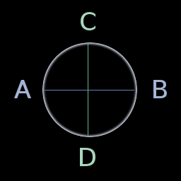
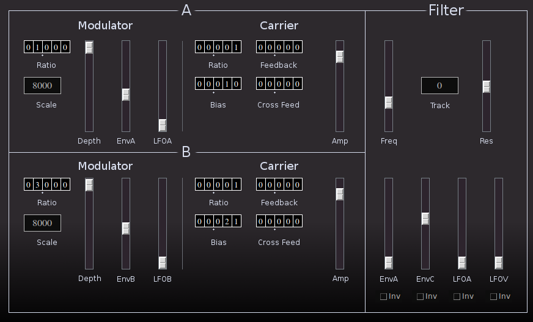
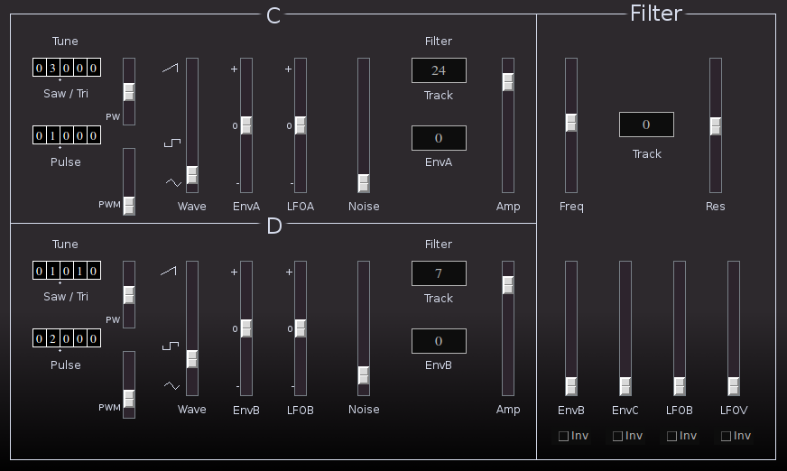
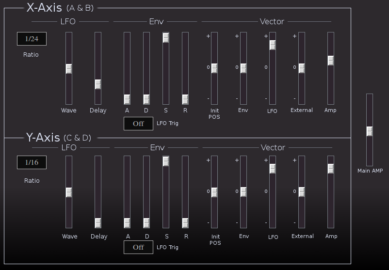
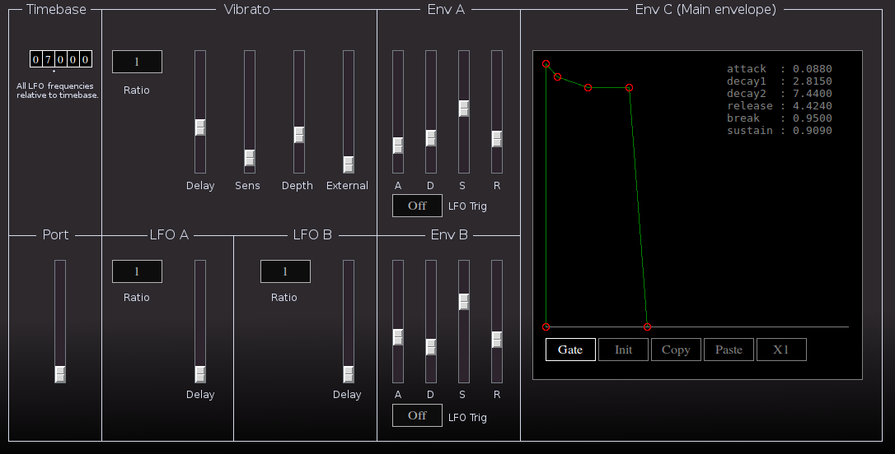

SOL

| Home | Contents | Synth Catalog | Previous: Saw3 | Next: SS1 |
Sol is a quasi Vector Synth where the signal is produced by cross-mixing four component tones (A, B, C, D). Conceptually the tones are arranged at the compass points of a circle.
On reflection I do not believe Sol is a true Vector Synth. It is an instrument with a lot of cross fading between elements.
The relative mix between tones A and B on the x-axis is independent of y-axis mix of C and D. Several control signals provide modulation of the current mix between the four tones.
A Sol voice contains the following components:- 8 Oscillators
- 2 each tones A and B used as FM modulator/carrier pairs
- 2 each tones C and D. 1 saw/tri wave, 1 pulse wave.
- 2 noise sources, 1 each tones C and D.
A and B may produce noise via FM feedback. - 4 filters.
- 1 each vector axis X and Y.
- 1 each tones C and D .
- 5 Envelopes.
- 2 ADSR dedicated to vector modulation.
- 2 ADSR as general modulation sources.
- 1 ADDSR as main output envelope.
- 5 LFOs.
- 2 dedicate to vector modulation.
- 2 as general modulation sources.
- 1 vibrato.
Tones A and B on the x-axis use simple FM modulator/carrier pairs. After mixing the signal is sent through a common lowpass filter.
The controls for A and B are identical with exception of the available modulation sources.
- Modulator
- Ratio - Modulator frequency ratio.
- Scale - Modulator amplitude scale, higher values produce deeper modulation. The scale value essentially sets the sensitivity of the following values.
- Depth - Modulation depth.
- EnvA (EnvB) - Modulation depth from envelope A (tone A) or envelope B (tone B).
- LFOA (LFOB) - Modulation depth from LFO A (or B).
- Carrier
- Ratio - Carrier frequency ratio.
- Bias - Fixed value added to carrier frequency.
- Feedback - Amount of carrier output feed back to modulator.
- Cross Feed - Amount of signal from opposite tone used as modulator.
For tone A, Cross Feed uses the output of tone B as a modulation source of A.
Likewise, for tone B, Cross Feed uses output of A to modulate B. - Amp - Tone output amplitude (up to 6db gain).
- Filter. The filter is applied to combined A B signal after the vector cross mixing stage.
- Freq - Initial cutoff frequency.
- Track - Keyboard tracking (0, 0.5, 1 or 2).
- Res - Resonance
- EnvA - Amount envelope A applied to filter frequency.
- Env C - Amount main envelope applied to filter.
- LFOA - Amount LFO A applied to filter.
- LFOV - Amount vibrato signal is applied to filter. Selecting the "Inv" check-boxes bellow each slider causes the corresponding signal to be inverted."
Tones C and D on the y-axis are filtered sawtooth, triangle, pulse or noise. The controls for each tone are identical with exception of modulation source. The main filter section is identical to the A B filter again with exception of modulation sources.
- Tune Saw/Tri - Sawtooth/triangle wave tuning.
- Tune Pulse - Pulse wave tuning.
- PW - Pulse Width - center is square wave.
- PWM - Pulse Width Modulation be LFO (LFO A for tone C)(LFO B for tone D).
- Wave - Waveform mix.
- EnvA (EnvB) - Envelope applied to wave mix.
- LFOA (LFOB) - LFO applied to wave mix.
- Filter Track - Cutoff of tone filter relative to sawtooth frequency. The tone filter is separate from the primary filter to the right.
- Filter EnvA (EnvB) - Amount envelope applied to tone filter cutoff.
- Amp - Tone output amplitude (up to 6db gain)
The vector section is divided in to two independent sections: x-axis (tones A and B) and y-axis (tones C and D). Each section has dedicated LFO and ADSR envelopes.
- LFO
- Ratio - Relative LFO frequency. The frequencies of all Sol LFOS are relative to a timebase value set on the modulation page. LFO times may be as low as 1/256 of the timebase value.
- Wave - LFO wave shape is triangular at center position and sawtooth at the extremes.
- Delay - LFO onset delay, up to 4 seconds.
- Env - The envelope is standard ADSR type with segment times up to 16 seconds. The envelope may be triggered either by the keyboard or the LFO.
- Vector.
- Init Pos - Initial position between -1 and +1. Values at the extremes will completely attenuate one or the other tones. A position of 0.0 produces an equal mixture of both tones.
- Env - Amount of envelope applied to vector position.
- LFO - Amount of LFO applied to vector position.
- External - Amount of external control signal applied to vector position. There are independent control buses for the x and y axis.
- Amp - Gain for axis tone.
The Modulation page contains controls for general modulation signals, and miscellaneous parameters.
- Timebase - All LFO frequencies are relative to the timebase value.
- Port - Portamento time.
- Vibrato.
- Ratio - LFO frequency ratio.
- Delay - Onset delay.
- Sens - Sensitivity.
- Depth.
- External - Amount external signal applied to pitch modulation.
- LFO A (LFO B) - general sinewave sources.
- Ratio - Frequency ratio.
- Delay - Onset delay.
- Env A (Env B) - general ADSR generators. Envelopes A and B may either be triggered by keyboard or LFO.
- Env C - Primary ADDSR envelope.
Parameters:
- port - Portamento time (0..1)
- amp - Output gain (0..2)
- timebase - LFO timebase in (0..99.999) seconds
- vratio - Vibrato ratio
- vsens - Vibrato sensitivity (0..1)
- vdepth - Vibrato depth (0..1)
- vdelay - Vibrato delay (0..4) seconds
- pitch_ctrlbus - External pitch control (0..1)
- xlfo_ratio - X Vector LFO ratio
- xlfo_wave - X Vector LFO wave (0..1) 0.5=triangle
- xlfo_delay - X Vector LFO onset delay (0..4) seconds
- xenv_attack - X Vector env attack (0..16) seconds
- xenv_decay - X Vector env decay (0..16) seconds
- xenv_sustain - X Vector env sustain level (0..1)
- xenv_release - X Vector env release (0..16) seconds
- xenv_lfo_trig - X Vector env trig mode, 0=key gate, 1= XLFO
- xpos - X Vector initial position (-1..+1)
- xpos_xlfo - X Vector LFO mod depth (-1..+1)
- xpos_xenv - X Vector Env mod depth (-1..+1)
- xpos_vxbus - X Vector external mod depth (-1..+1)
- xamp - X Vector combined output amp (0..2)
- ylfo_ratio - Y Vector LFO ratio
- ylfo_wave - Y Vector LFO wave (0..1) 0.5=triangle
- ylfo_delay - Y Vector LFO onset delay (0..4) seconds
- yenv_attack - Y Vector env attack (0..16) seconds
- yenv_decay - Y Vector env decay (0..16) seconds
- yenv_sustain - Y Vector env sustain level (0..1)
- yenv_release - Y Vector env release (0..16) seconds
- yenv_lfo_trig - Y Vector env trig mode, 0=key gate, 1= YLFO
- ypos - Y Vector initial position (-1..+1)
- ypos_ylfo - Y Vector LFO mod depth (-1..+1)
- ypos_yenv - Y Vector Env mod depth (-1..+1)
- ypos_vybus - Y Vector external mod depth (-1..+1)
- yamp - Y Vector combined output amp (0..2)
- alfo_ratio - LFO A frequency ratio
- alfo_delay - LFO A onset delay (0..4) seconds
- blfo_ratio - LFO B frequency ratio
- blfo_delay - LFO B onset delay (0..4) seconds
- aenv_attack - Env A attack time (0..16) seconds
- aenv_decay - Env A decay time (0..16) seconds
- aenv_sustain - Env A sustain level (0..1)
- aenv_release - Env A release time (0..16) seconds
- aenv_lfo_trig - Env A trig mode, 0=key gate, 1=LFO A
- benv_attack - Env B attack time (0..16) seconds
- benv_decay - Env B decay time (0..16) seconds
- benv_sustain - Env B sustain level (0..1)
- benv_release - Env B release time (0..16) seconds
- benv_lfo_trig - Env B trig mode, 0=key gate, 1=LFO B
- cenv_attack - Env C attack time (0..16) seconds
- cenv_decay1 - Env C initial decay time (0..16) seconds
- cenv_decay2 - Env C second decay time (0..16) seconds
- cenv_release - Env C release time (0..16) seconds
- cenv_breakpoint - Env C decay breakpoint level (0..1)
- cenv_sustain - Env C sustain level (0..1)
- cenv_trig_mode - Env C trig mode, 0=gate, 1=trigger
- opa_mod_ratio - Tone A modulator frequency ratio
- opa_mod_scale - Tone A modulator scale factor
- opa_mod_depth - Tone A modulation depth (0..1)
- opa_mod_alfo - Tone A LFO to modulation depth (0..1)
- opa_mod_aenv - Tone A Env to modulation depth (0..1)
- opa_car_ratio - Tone A carrier frequency ratio
- opa_car_bias - Tone A carrier frequency bias
- opa_feedback - Tone A feedback amount (0..99)
- opa_cross_feedback - Tone A modulation depth from Tone B (0..99.999)
- opa_amp - Tone A amplitude (0..2)
- opb_mod_ratio - Tone B modulator frequency ratio
- opb_mod_scale - Tone B modulator scale factor
- opb_mod_depth - Tone B modulation depth (0..1)
- opb_mod_alfo - Tone B LFO to modulation depth (0..1)
- opb_mod_aenv - Tone B Env to modulation depth (0..1)
- opb_car_ratio - Tone B carrier frequency ratio
- opb_car_bias - Tone B carrier frequency bias
- opb_feedback - Tone B feedback amount (0..99)
- opb_cross_feedback - Tone B modulation depth from Tone B (0..99.999)
- opb_amp - Tone B amplitude (0..2)
- opc_saw_ratio - Tone C Sawtooth/Triangle frequency ratio
- opc_pulse_ratio - Tone C Pulse frequency ratio
- opc_pulse_width - Tone C Pulse width (0..1)
- opc_pulse_width_alfo - Tone C Pulse Width Modulation by LFO (0..1)
- opc_wave - Tone C Wave max (0..1 0.0=tri, 0.35=pulse, 1.0=saw)
- opc_wave_alfo - Tone C LFO to wave (-1..+1)
- opc_wave_aenv - Tone C Env to wave (-1..+1)
- opc_noise_amp - Tone C Noise amplitude (0..2)
- opc_filter_track - Tone C filter frequency relative to sawtooth, (1,2,3,4,5,6,7,8,9,12,16,24,32,64)
- opc_filter_aenv - Tone C envelope modulation filter freq (0,1,2,3,...,24,32,64)
- opc_amp - Tone C amplitude (0..2)
- opd_saw_ratio - Tone D Sawtooth/Triangle frequency ratio
- opd_pulse_ratio - Tone D Pulse frequency ratio
- opd_pulse_width - Tone D Pulse width (0..1)
- opd_pulse_width_blfo - Tone D Pulse Width Modulation by LFO (0..1)
- opd_wave - Tone D Wave max (0..1 0.0=tri, 0.35=pulse, 1.0=saw)
- opd_wave_blfo - Tone D LFO to wave (-1..+1)
- opd_wave_benv - Tone D Env to wave (-1..+1)
- opd_noise_amp - Tone D Noise amplitude (0..2)
- opd_filter_track - Tone D filter frequency relative to sawtooth, (1,2,3,4,5,6,7,8,9,12,16,24,32,64)
- opd_filter_benv - Tone D envelope modulation filter freq (0,1,2,3,...,24,32,64)
- opd_amp - Tone D amplitude (0..2)
- xfilter_freq - X-axis filter (Tones A B) cutoff (0..16k)
- xfilter_track - X-axis filter (Tones A B) key track (0,0.5,1,2)
- xfilter_freq_aenv - X-axis filter (Tones A B) Env A modulation depth (-16k..+16k)
- xfilter_freq_cenv - X-axis filter (Tones A B) Env C modulation depth (-16k..+16k)
- xfilter_freq_alfo - X-axis filter (Tones A B) LFO A modulation depth (-8k..+8k)
- xfilter_freq_vlfo - X-axis filter (Tones A B) LFO V modulation depth (-8k..+8k)
- xfilter_res - X-axis filter (Tones A B) resonance (0..1)
- yfilter_freq - Y-axis (Tones C D) cutoff (0..16k)
- yfilter_track - Y-axis (Tones C D) key track (0,0.5,1,2)
- yfilter_freq_benv - Y-axis (Tones C D) Env B modulation depth (-16k..+16k)
- yfilter_freq_cenv - Y-axis (Tones C D) Env C modulation depth (-16k..+16k)
- yfilter_freq_blfo - Y-axis (Tones C D) LFO B modulation depth (-8k..+8k)
- yfilter_freq_vlfo - Y-axis (Tones C D) LFO V modulation depth (-8k..+8k)
- yfilter_res - Y-axis (Tones C D) resonance (0..1)
Buses:
- Audio out buses:
- outbus - Main output bus, combined x and y axis signals
- xout - x-axis (tones A and B) only
- yout - y-axis (tones C and D) only
- Control input buses:
- vxbus - Vector x-axis control.
- vybus - Vector y-axis control.
- ctrlbus - Pitch control.
| Home | Contents | Synth Catalog | Previous: Saw3 | Next: SS1 |